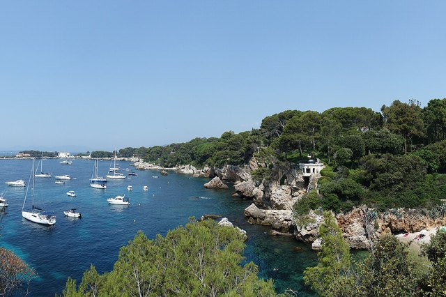
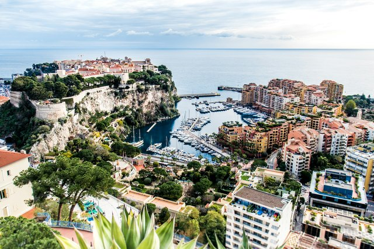
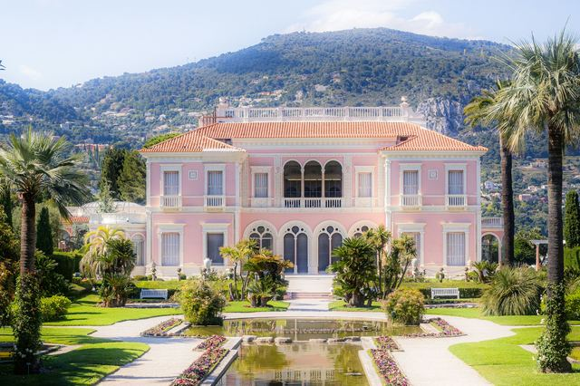
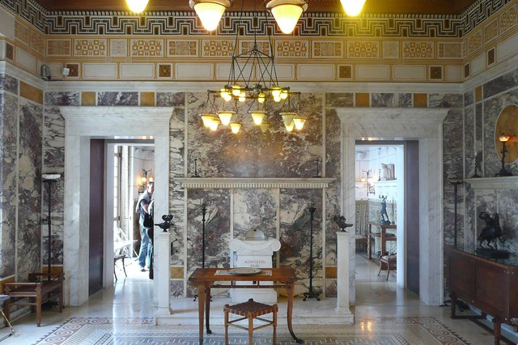
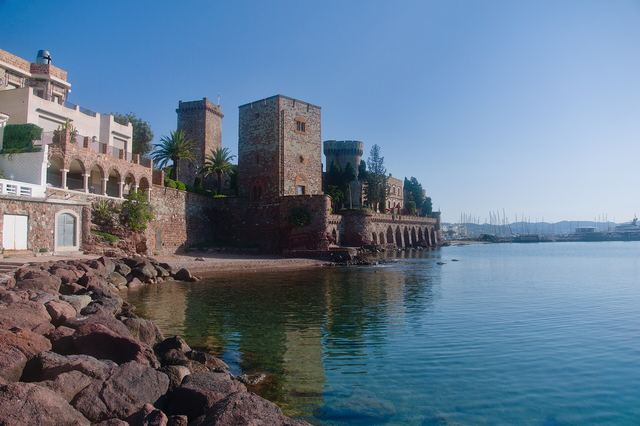
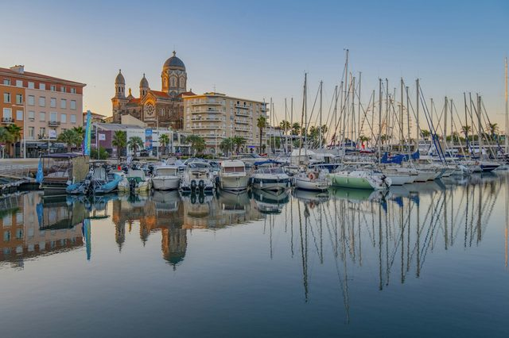
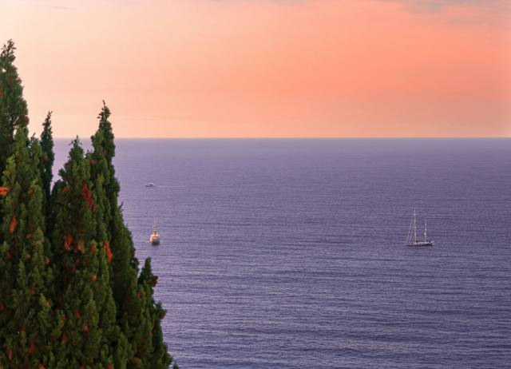
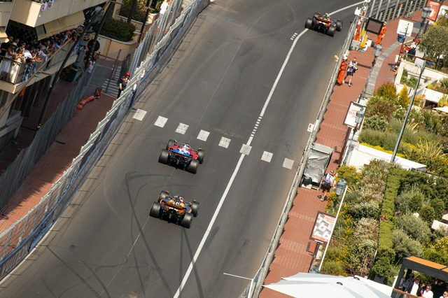
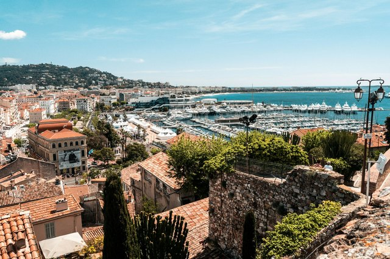

Visiting the French Riviera
Hilltop villages, islands fifteen minutes from the Croisette, legendary harbours: the Riviera is easy to explore without a car, as long as you know where to go and when.
Photo: Antoine Contenseau / Unsplash
The French Riviera — the Côte d’Azur — stretches from Saint-Tropez to Menton, between the Var and the Italian border. The coastal railway links most of the main towns, Nice and Cannes make good bases, and many places can be combined in a single day.
The hard part is not finding things to see but avoiding the July-August traffic jams and the hours when the cruise-ship coaches arrive. Each guide below tells you how to get there and when to go. We have added the great day trips from the Riviera too, such as Porquerolles and the Verdon Gorge.
Cannes
-
 Cannes
CannesMuch more than a festival: a hilltop old town, a covered Provençal market and two wild islands fifteen minutes away by boat.
-
 La Croisette
La CroisetteThe Palais des Festivals, grand hotels and beaches, from the Old Port to Pointe Croisette.
-
 Le Suquet
Le SuquetThe lanes of old Cannes, the Suquet tower, its museum and Forville market.
-
 Palm Beach
Palm BeachThe old Art Deco casino on Pointe Croisette, its beach and views of the Lérins Islands.
-
 La Malmaison art centre
La Malmaison art centreThe Croisette art centre, in the last remnant of the Grand Hôtel.
-
 Forville market
Forville marketCannes’ covered market at the foot of Le Suquet, with a Monday flea market.
Nice
-
 Nice
NiceThe capital of the Riviera: a huge bay, an old town of ochre façades and museums worthy of the greatest cities.
-
 Vieux-Nice
Vieux-NiceThe Cours Saleya, socca, baroque lanes and Castle Hill.
-
 Promenade des Anglais
Promenade des AnglaisSeven kilometres along the Baie des Anges, the Negresco, the Musée Masséna and the beaches.
-
 Port Lympia
Port LympiaColourful pointu boats, Italian façades and boats to Villefranche and Monaco.
-
 Place Masséna and the Carré d’Or
Place Masséna and the Carré d’OrThe chequerboard and red arcades, the Promenade du Paillon and Belle Époque Nice.
-
 Castle Hill (Colline du Château)
Castle Hill (Colline du Château)Nice’s balcony: views over the Baie des Anges and a waterfall.
-
 Marc Chagall National Museum
Marc Chagall National MuseumThe 17 canvases of the Biblical Message, at the foot of Cimiez.
Antibes, Juan-les-Pins and the Cape
-
 Antibes
AntibesRamparts facing the sea, a Picasso museum in a château and one of the most beautiful coastal paths on the Riviera.
-
 Old Antibes
Old AntibesRamparts by the sea, the Picasso Museum, the Provençal market and La Gravette beach.
-
 Port Vauban
Port VaubanThe superyachts of the billionaires’ quay, Fort Carré and the Nomade statue.
-
 Juan-les-Pins
Juan-les-PinsSandy beaches facing the Esterel, the pine grove and the Jazz à Juan festival.
-

Cap d’AntibesThe Tire-Poil path, La Garoupe and Billionaires’ Bay.
Monaco
-
 Monaco
MonacoTwo square kilometres, a palace, a casino and one of Europe’s finest sea museums. Monaco is easy to see on foot in a day.
-
 Monte-Carlo
Monte-CarloThe Belle Époque casino, Place du Casino, the Hôtel de Paris and gardens facing the sea.
-
 The Rock of Monaco
The Rock of MonacoThe Prince’s Palace, the changing of the guard, the cathedral and the Oceanographic Museum.
-
 Port Hercule
Port HerculeYachts below the Rock, the Grand Prix circuit and La Condamine market.
-
 The Prince’s Palace of Monaco
The Prince’s Palace of MonacoThe Grimaldi residence and the changing of the guard at 11.55 am.
-

Monaco Exotic GardenCliffside cacti and a plunging view over the Principality.
From Villefranche to Menton
-
 Villefranche-sur-Mer
Villefranche-sur-MerOne of the most beautiful bays in the Mediterranean, a village of ochre and pink façades, and a fishermen’s chapel decorated entirely by Cocteau.
-
 Saint-Jean-Cap-Ferrat
Saint-Jean-Cap-FerratThe billionaires’ peninsula, but also one of France’s most beautiful coastal paths and a pink villa surrounded by nine gardens.
-

Villa Ephrussi de RothschildThe pink Belle Époque palace and its nine gardens overlooking the sea.
-

Beaulieu-sur-Mer and Villa KérylosThe Greek Villa Kérylos and a Belle Époque bay facing Cap Ferrat.
-
 Menton
MentonThe pearl of France, right next to Italy: the mildest town on the coast, with colourful façades, lemons and gardens.
From the Estérel to Saint-Tropez
-
 Théoule-sur-Mer
Théoule-sur-MerThe red rocks of the Estérel, Pointe de l’Aiguille and the coves.
-

Mandelieu-la-NapouleThe Château de la Napoule, its gardens and the Mimosa Festival.
-

Fréjus and Saint-RaphaëlThe Roman remains of Fréjus, Saint-Raphaël’s Old Port and the red Esterel corniche.
-
 Saint-Tropez
Saint-TropezA former fishing village turned legend. Out of season Saint-Tropez is a little Provençal port again; in summer, arrive by sea.
Hilltop villages
-
 Èze
ÈzeA medieval village clinging to its rock more than 400 metres above the sea. The view from the garden at the very top is worth the climb on its own.
-
 Saint-Paul-de-Vence
Saint-Paul-de-VenceA walled village on its hill, art galleries at every door, and one of Europe’s finest modern art museums a short walk away.
-
 Grasse
GrasseThe world capital of perfume. Tour the factories, create your own fragrance, and see why jasmine and rose fields are worth their weight in gold.
-
 Gourdon
GourdonAn eagle’s nest on the edge of a cliff above the Gorges du Loup. From its square, the view runs to the sea, from the Esterel to Cap d’Antibes.
-
 Mougins
MouginsA spiral-shaped village above Cannes, where Picasso spent his last years and where people come as much for the art as for the food.
-
 Biot
BiotThe glassblowers’ village. Watch bubble glass being blown, wander between workshops and discover Fernand Léger’s colours.
-

Roquebrune-Cap-MartinA medieval village perched above Monaco and a pine-covered cape where Le Corbusier spent his summers in a cabin.
Islands and great outdoors
-
 Lérins Islands
Lérins IslandsFifteen minutes by boat from the Croisette, two car-free islands: pine woods, coves, a fort where the Man in the Iron Mask was held, and an abbey where monks still live.
-
 Esterel Massif
Esterel MassifRed rocks plunging into a turquoise sea: between Cannes and Saint-Raphaël, the wildest landscape on the French Riviera.
-
 Porquerolles
PorquerollesA car-free island with white-sand beaches and Caribbean-clear water, in the heart of a national park.
-
 Verdon Gorge
Verdon GorgeEurope’s largest canyon, emerald-green water and dizzying cliffs, two hours from the Riviera.
Festivals and events
-
 Menton Lemon Festival 2027
Menton Lemon Festival 2027Floats and giant sculptures made of lemons: the 93rd edition, 13 to 28 February 2027.
-
 Nice Carnival 2027
Nice Carnival 2027Flower parades and illuminated floats on Place Masséna, 9 to 28 February 2027.
-
 Christmas on the French Riviera 2026
Christmas on the French Riviera 2026The Nice, Cannes and Monaco villages, from late November 2026 to early January 2027.
-
 Cannes Film Festival 2027
Cannes Film Festival 2027The 80th edition from 11 to 22 May 2027: the red carpet, the Cinéma de la Plage and practical tips.
-

Monaco Grand Prix 2027From 4 to 6 June 2027, with a sprint race for the first time: schedule, grandstands and tips.
-

Les Plages Électroniques 2027Cannes’ big electronic beach party, in August on the Palais beach.